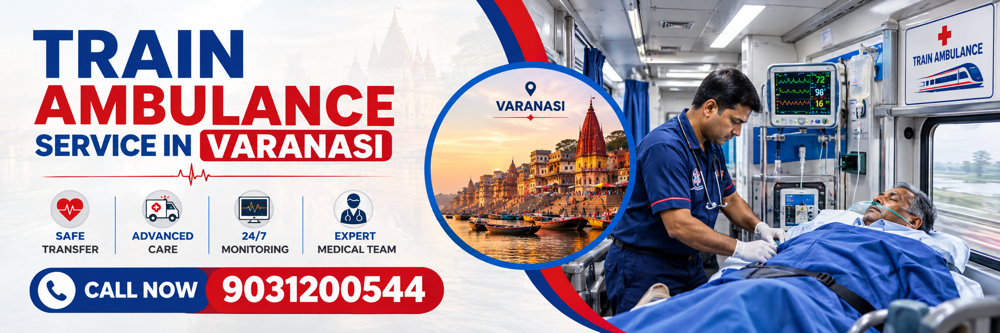

Looking for a reliable Train Ambulance Service in Varanasi for safe and comfortable long-distance patient transportation? Save Life Wellness provides medical transportation coordination for patients who need to travel from Varanasi to other cities for specialized medical treatment.
Our Train Ambulance in Varanasi service can be arranged according to the patient's medical condition, destination, travel requirements and need for medical assistance.
When a patient needs to travel from Varanasi to another city for advanced medical treatment, a Train Ambulance Service in Varanasi can provide a practical option for long-distance medical transportation.
Train ambulances are designed to help patients travel by railway while receiving the medical assistance required during the journey. Depending on the patient's condition, the transportation arrangement may include a medical attendant, nurse, oxygen support, monitoring equipment, medicines and other necessary facilities.
Save Life Wellness assists families in arranging Train Ambulance in Varanasi for intercity and long-distance patient transportation. Whether the destination is Delhi, Lucknow, Patna, Kolkata, Mumbai, Hyderabad, Bengaluru or another city, our team can help coordinate the required transportation arrangements.
If you are searching for a dependable Train Ambulance service in Varanasi, contact our team with the patient's medical condition, current location, destination and travel requirements.
A Train Ambulance is a medical transportation arrangement in which a patient travels by railway while receiving appropriate medical assistance during the journey.
Depending on the patient's medical requirements, the arrangement may include a suitable railway berth or compartment, medical attendant, nurse, oxygen support, monitoring equipment and other essential facilities.
Unlike ordinary passenger travel, a train ambulance arrangement focuses on patient comfort and medical support throughout the journey. The exact facilities required depend on the patient's medical condition and the advice of the treating doctor.
Railway transportation can be useful for patients travelling long distances when their medical condition permits such travel and when air ambulance transportation is not required.
Long-distance patient transportation requires careful planning. Travelling with a patient by an ordinary train can be difficult when the patient cannot sit or walk independently or requires medical attention during the journey.
A professionally coordinated Train Ambulance in Varanasi can help address these requirements.
The exact facilities are selected according to the patient's condition. Families should provide accurate medical information so that the appropriate level of medical support can be planned.
Long-distance medical transportation can be expensive, especially when specialized air ambulance services are required. For medically stable patients, railway medical transportation may provide another option.
For patients travelling between distant cities, railway transportation may be considered when the patient's medical condition permits a long journey.
Depending on the patient's requirements, a nurse, medical attendant or trained medical professional may accompany the patient.
Patients requiring oxygen or basic medical monitoring may be transported with appropriate equipment, subject to their medical requirements and operational feasibility.
A complete patient transfer may require transportation from the current hospital to the railway station and then from the destination railway station to the receiving hospital. Proper coordination can make the process easier for the family.
One of the most common questions families ask is: How to book train ambulance in Varanasi? The booking process generally begins by collecting the patient's medical and travel information.
Contact the service provider and explain that you need medical transportation from Varanasi to another city.
Provide important information such as:
The patient's condition should be evaluated to determine what level of medical support may be necessary during the journey.
After understanding the requirement, the service provider can determine the available railway route and suitable travel arrangement. Railway availability may vary according to the route, date, train and berth availability.
If required, a nurse, medical attendant or trained medical professional can be arranged to accompany the patient.
The patient may require an ambulance from the hospital or residence to the railway station. Similar ambulance support may be required at the destination station.
During the journey, the accompanying medical staff provides the agreed support. At the destination, the patient can be transferred to a waiting ambulance for transportation to the receiving hospital.
Train Ambulance Charges are not the same for every patient. The total cost depends on the patient's requirements, destination, distance, railway arrangements and medical support required during transportation.
The major factors affecting Train Ambulance Charges include:
For example, a stable patient travelling from Varanasi to a nearby major city may have different transportation requirements from a patient requiring continuous oxygen and medical monitoring during a long-distance journey.
For an accurate estimate, families should provide the patient's medical details and destination to the service provider.
The exact package depends on the patient's requirements. A typical medical transportation arrangement may include some of the following services:
Families should confirm the exact facilities and charges before finalizing the transportation.
A Train Ambulance in Varanasi can be considered for transportation to many major cities depending on railway connectivity and availability.
Patients travelling to Delhi may require transportation for specialized medical treatment. Railway medical transportation can be considered when the patient's condition permits the journey.
Lucknow is another major healthcare destination in Uttar Pradesh. Railway transportation can be considered for patients who are medically stable enough for the journey.
Patients travelling towards Patna may use railway-based medical transportation depending on train availability and medical requirements.
For long-distance transfers to Kolkata, train ambulance arrangements may provide an alternative to air transportation for medically suitable patients.
Long-distance travel to Mumbai requires careful planning, particularly for patients requiring medical support. The patient's condition should be evaluated before selecting the mode of transportation.
Other destinations can also be considered depending on railway routes and availability.
Patient safety should remain the primary consideration during medical transportation.
Depending on the patient's requirements, medical support may include observation of vital signs, oxygen administration, medication assistance, positioning and general nursing care.
Families should carry the patient's medical records, prescriptions, identification documents, medicines and other necessary documents.
Train medical transportation may be considered for patients who are medically stable but cannot travel independently.
However, train ambulance transportation may not be appropriate for every medical emergency. Critically unstable patients may require advanced critical-care transportation.
Save Life Wellness focuses on coordinating medical transportation according to the patient's requirements.
Our team can assist families with planning long-distance patient transfers, including medical staff coordination, railway travel arrangements and ambulance transfers.
The objective is to make the transportation process organized and easier for the patient's family.
Before booking, families can discuss:
Families should prepare the following items before beginning the journey:
Keeping these documents organized can help medical staff understand the patient's medical history and assist with the transfer.
1. What is a train ambulance service in Varanasi?
A train ambulance service is a medical transportation arrangement that allows a patient to travel by railway with appropriate medical assistance. Depending on the patient's condition, the service may include a medical attendant, nurse, oxygen, monitoring equipment and other required support.
2. How to book train ambulance in Varanasi?
To book a train ambulance, contact the service provider and share the patient's medical condition, current location, destination, preferred travel date, oxygen requirement and other relevant details. The provider can then assess the requirements and coordinate the railway and medical arrangements.
3. What are Train Ambulance Charges in Varanasi?
Train Ambulance Charges vary according to the destination, distance, patient condition, railway arrangement, medical staff, equipment, oxygen requirement and ambulance transfers. A customized estimate can be provided after understanding the patient's requirements.
4. Can a bedridden patient travel by train ambulance?
Medically stable bedridden patients may be transported by train ambulance when suitable arrangements are available. The patient's condition should be assessed before travel and appropriate medical assistance should be arranged.
5. Is oxygen available in a train ambulance?
Oxygen support can be arranged when medically required and operationally feasible. The patient's oxygen requirement should be communicated in advance so that an appropriate arrangement can be planned.
6. Can a nurse accompany the patient?
Nursing or trained medical support can be arranged depending on the patient's condition and the service package. The required level of medical assistance should be discussed before booking.
7. Can a train ambulance travel from Varanasi to Delhi?
Train-based medical transportation can be considered between Varanasi and Delhi depending on railway availability, patient condition and the required medical arrangements.
9. Is train ambulance cheaper than an air ambulance?
For medically suitable patients, railway medical transportation may be a more economical option than air ambulance transportation. The final cost depends on the patient's condition, route, medical team, equipment and other requirements.
10. Can a critical patient travel by train ambulance?
Not every critical patient is suitable for railway transportation. Patients who are unstable or require advanced intensive-care support may need a higher level of medical transportation. The treating doctor or qualified medical professional should assess the patient before travel.
11. What information is required to book a train ambulance?
Generally, the service provider may need the patient's age, diagnosis, current medical condition, oxygen requirement, current location, destination hospital, preferred travel date and details of the required medical support.
12. How far in advance should I book a train ambulance?
It is advisable to contact the service provider as early as possible because railway availability, medical staff, equipment and ambulance arrangements may require coordination.
13. Can family members travel with the patient?
Depending on railway arrangements and applicable rules, family attendants may be able to travel with the patient. The number of attendants and travel arrangements should be confirmed during booking.
14. Is train ambulance service available 24/7?
Medical transportation requirements can occur at any time. Contact the service provider to check current availability, railway arrangements and medical support for your required route and date.
15. Why should I choose a professional train ambulance service?
A professional service can help coordinate railway transportation, medical staff, equipment, station transfers and destination ambulance services. This can make long-distance patient transfer more organized for the family.
A properly planned Train Ambulance Service in Varanasi can be an option for medically stable patients who need long-distance transportation for further treatment.
With appropriate medical support, railway coordination and ambulance transfers, patients can be moved between cities while receiving the assistance they require.
If you are searching for Train ambulance in Varanasi, Train Ambulance service, Train Ambulance, or information about How to book train ambulance in Varanasi, contact Save Life Wellness and provide the patient's medical and travel details.
Our team can help you understand available options, required medical support, railway arrangements and estimated Train Ambulance Charges based on your specific journey.
When a loved one needs urgent medical transfer over a long distance, every decision matters. Save Life Train Ambulance Service in varanasi provides a safe, medically supervised, and cost-effective solution for transferring critically ill patients across India—without compromising on care, comfort, or dignity.
We operate 24/7 ICU-equipped train ambulances from varanasi Junction (GHY), ensuring uninterrupted medical care from one hospital bed to another, no matter how far the destination.
Why families trust us in emergencies:
Call Now: +91-9031200544
A train ambulance in varanasi is often the safest and most practical option when long-distance medical transport is required under continuous supervision. This service is ideal when:
The patient is referred to metro or super-specialty hospitals such as AIIMS Delhi, ILBS, Vellore, Chennai, or Bangalore
Train ambulances offer a stable environment, continuous monitoring, and significantly lower cost compared to air transport—making them a reliable choice for many critical cases.
A train ambulance is a specially arranged railway coach or reserved section of a train in 1st AC tier or 2nd AC tier converted into a moving ICU. It allows patients to travel long distances while receiving hospital-level medical care throughout the journey.
Unlike road ambulances, train ambulances provide:
This makes a train ambulance safer and more comfortable for extended transfers.
Our ICU Train Ambulance Service in varanasi is fully equipped to manage critical and high-dependency patients during transit.
Onboard ICU facilities include:
Safety & hygiene:
Medical care doesn’t stop once the train starts moving. Every train ambulance service in varanasi we operate is supported by a trained and experienced medical team.
Each train ambulance journey is supported by a carefully assigned onboard care team, including:
The team continuously monitors vital signs, manages medications, and is fully prepared to handle any medical emergency during the journey—giving families peace of mind.
We provide long-distance train ambulance services from varanasi to major medical hubs across India.
Common routes include:
We also support referrals and transfers from across the Northeast, including:
All transfers are coordinated from varanasi Junction (GHY) with complete logistical support.
The cost of a train ambulance from varanasi is significantly lower than air ambulance services while still offering ICU-level care.
Approximate starting range:
Final cost depends on:
We follow transparent pricing with no hidden charges. A clear estimate is shared after medical assessment.
Call +91-9031200544 for an exact cost based on your case.
Both services have their place, but the right choice depends on the patient’s condition and budget.
We guide families honestly so they can choose what is medically and financially appropriate.
We follow a simple, medically supervised process to ensure a smooth transfer:
From the first call to final admission, we manage everything.
Families across the Northeast choose us because we combine medical expertise with compassionate care.
Our focus is always on safety, continuity of care, and peace of mind.
“Our father was transferred safely from varanasi to Delhi. The medical team was professional and kept us updated throughout the journey.” ~ Varun, varanasi
“Very reliable and affordable train ambulance service. The staff handled everything calmly during a stressful time.” ~ Nikita, Assam
“Best option for long-distance transfer. The doctor and nurse were excellent.” ~ Bhairav, varanasi
A train ambulance in varanasi is suitable for:
How fast can a train ambulance be arranged from varanasi?
Usually within 24–48 hours, depending on train availability and medical urgency.
Is a doctor mandatory onboard?
A doctor is provided based on the patient’s condition. Critical cases always include medical staff.
Can family members travel with the patient?
Yes, one or two attendants are usually allowed.
Is the train ambulance safe?
Yes. Continuous monitoring, ICU equipment, and trained staff ensure safety throughout the journey.
How long does the journey take?
It depends on the route and train schedule. We choose the fastest medically suitable option.
Is sanitation maintained?
Absolutely. All equipment and the patient area are thoroughly sanitized before every transfer.
Need Emergency Train Ambulance from varanasi?
Call Us Now: +91-9031200544
24/7 ICU Train Ambulance | Bed-to-Bed Transfer
Address: H. No. 17A, Jilika Path, Byelane no 1, Sankardevnagar, Panjabari, varanasi -37
When every second matters, trust the best train ambulance service in varanasi to move your loved one safely—under expert medical care, every mile of the journey.